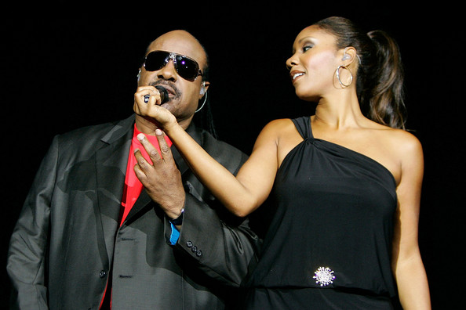
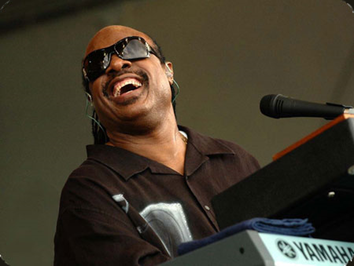
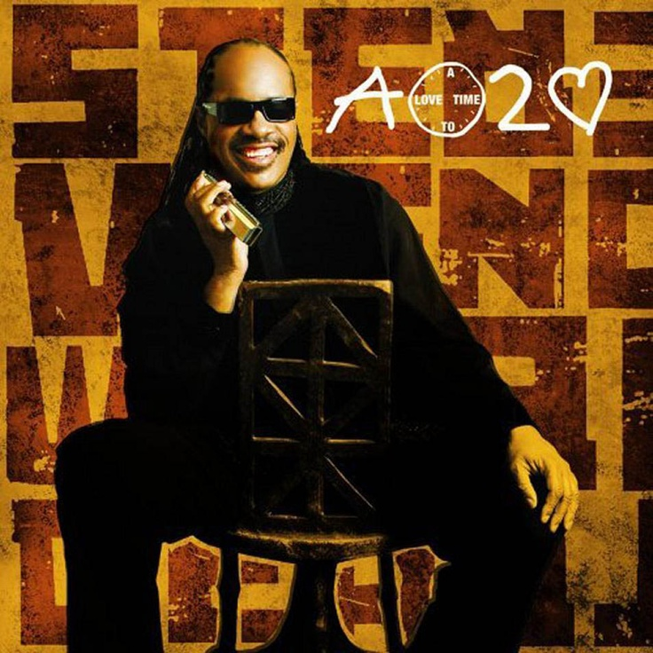
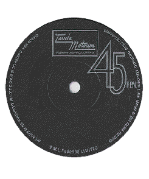

Continued Success
Legacy and Activism...

Stevie Wonder continued to be a major figure in popular music into the late 70s, the 80s and the 90s. His 1975 double album Songs in the Key of Life spawned a range of hit songs, including "Sir Duke", "I Wish" and "As". This album opens with "Isn't She Lovely", Wonder's famous tribute to his then newborn daughter, Aisha Morris, the eldest of his children. Morris is now a successful recording artist and has performed with Wonder on tour and in the studio
Wonder has had several meaningful relationships and has several other children, but is currently divorced. His second divorce seems to have been as amicable as the first, and Wonder has performed with his children on several occasions. Wonder is now 63 and seems in generally good health.

Wonder released new material into the 80s and the 90s as well as touring, making televison appearances and collaborating with a wide range of musicians, including Michael Jackson, Paul McCartney, Dionne Warwick, the Beach Boys, Elton John, and many more. During this time Wonder's work became more commercial and he was able to use his financial success to increase his charity contributions and political participation.
Wonder has always appeared to enjoy touring across the globe and is an talented linguist, often learning a few appropriate phrases to delight his local crowds. Wonder sings in Spanish on the single "Don't You Worry 'Bout a Thing" and in Zulu and Spanish on "Ngiculela / Es Una Historia / I Am Singing". He usually performs with a Yamaha keyboard as his primary instrument, the most recent model being the Yamaha Motif XF8.

After a ten year break from recording albums, Wonder released A Time 2 Love in 2005. The singles "From the Bottom of My Heart" and "So What The Fuss" were very popular with fans, and Wonder made history by producing the first music video with a full audio-description track to accompany "So What The Fuss". The description track, recorded by Busta Rhymes, aimed to allow blind people to really enjoy a music video for the first time. Wonder joked that after spending so much money on his music video, he deserved to know what was happening in it!
Since his mother's death in 2006, Wonder has begun to tour again in her honour, selling out London's O2 arena in 2007. He has also made high-profile musical tributes to the late Michael Jackson and Whitney Houston. When interviewed, Wonder appears down-to-earth and has a strong commitment to peace, social equality and justice, which he links to his Christian values. He often brings a keyboard to interviews so that he can play some music and demonstrate ideas.
"Sir Duke" live in London (2007)
"Isn't She Lovely" (1976)
